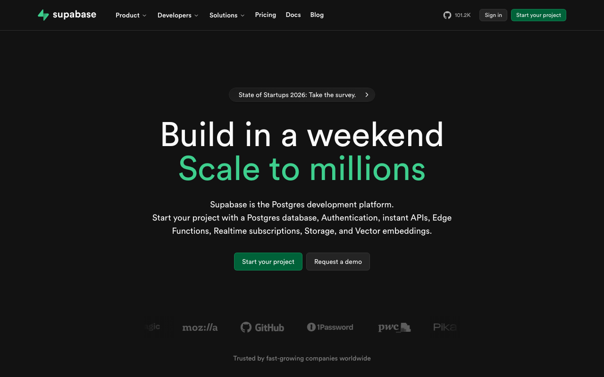

Supabase green 단일 액센트 · #1C1C1C 캔버스
Supabase · https://supabase.com · Fetched 2026-04-20

Supabase의 마케팅 사이트는 #1C1C1C near-black 캔버스 위에 Supabase green #3ECF8E 단 하나의 액센트로 승부하는 developer-brutalist minimal이다. Firebase를 대체하는 오픈소스 BaaS라는 포지셔닝이 그대로 시각화되어 — 화려하지 않고, 개발자에게 필요한 것만 명확하게, 터미널 / 코드 블록 / API 스키마를 hero 자리에 둔다.
컬러 시스템은 Tailwind 기반이지만 Supabase 고유의 dark-first 의미 layer를 얹었다. 지배색은 #1C1C1C(bg-dash), #191919(bg-1), #1E1E1E(bg-2), #262626(border) — 검정 6-8단 계단. 액센트는 #3ECF8E 외에 거의 사용되지 않고, Vercel blue #0070F3이 link에 등장할 뿐.
code-hike 터미널 chrome을 위한 macOS traffic-light 3색(#ED6B60/#F5BE4F/#62C554)은 hero에서 시그니처 역할을 한다. 타이포는 Ubuntu(오픈소스) + Office Code Pro(mono)로 "우리는 VSCode / DevTools / Linux 생태계"라는 메시지를 낸다.
인터랙션은 절제되어 있다. Supabase는 micro-interaction에서 scale 대신 border + glow 기반 hover를 선호한다. 예: 카드 hover에서 border-color: rgba(62,207,142,0.4) + 은은한 green glow.
01. 한눈에 보기 (Quick Start)
5분 안에 Supabase처럼 만들기 — 3가지만 하면 80%.
/* 1. Dark 6단 + green */
:root {
--supabase-green: #3ECF8E;
--bg-base: #1C1C1C;
--bg-2: #1E1E1E;
--border: #262626;
--fg: #EDEDED;
--link: #0070F3;
}
body { background: var(--bg-base); color: var(--fg); }/* 2. Ubuntu + Office Code Pro */
body {
font-family: "Ubuntu","Droid Sans",
-apple-system,sans-serif;
font-weight: 400; font-size: 16px;
}
code, pre, .mono {
font-family: "Office Code Pro",
"Courier New",monospace;
}/* 3. Terminal chrome (signature) */
.ch-frame {
background:#1E1E1E;
border:1px solid #262626;
border-radius:8px;
}
.ch-frame-button-left { background:#ED6B60; border:1px solid #CE5347; }
.ch-frame-button-middle{ background:#F5BE4F; border:1px solid #D6A243; }
.ch-frame-button-right { background:#62C554; border:1px solid #58A942; }border-color + text-color + outline glow로만 쓴다. solid green fill을 하면 Vercel이나 Cal.com 느낌이 된다.02. 출처와 수집 기준
| Source URL | https://supabase.com |
|---|---|
| Fetched | 2026-04-20 |
| HTML / CSS | Next.js + Tailwind + code-hike |
| Vars total | 788 (resolved 598 · 76%) |
| Signature lib | code-hike (.ch-frame-*, .ch-browser-*) |
03. 테크 스택
- Framework: Next.js (Vercel hosting)
- CSS: Tailwind + custom dark layer + code-hike
- Typography: Ubuntu (body) / Office Code Pro (mono)
- Theme: dark default, light available
- Signature: code-hike terminal chrome at hero
- Link accent: Vercel blue
#0070F3
04. 타이포그래피
Ubuntu body + Office Code Pro mono. weight 200-900 전 범위 로드, 실사용 400/500/600/700/800.
Font Stack
- Body/UI:
Ubuntu,Droid Sans, -apple-system, BlinkMacSystemFont, Segoe WPC, Segoe UI, sans-serif - Mono:
Office Code Pro,Courier New, Courier, monospace - Weights: 200/300/400/500/600/700/800/900 전 범위
Type Scale
05. 컬러
Supabase green single-accent + dark stack 8단 + Vercel blue link + code-hike traffic lights.
Dominant Usage
06. 스페이싱
Tailwind 4px 기본 scale. Section padding 96-128px.
07. 라디우스
07S. 섀도우
Supabase의 시그니처는 green glow. dark bg 위에서 box-shadow 대신 green aura로 elevation 표현.
08. 모션
| Pattern | Value | Use |
|---|---|---|
| hover transition | .15-.2s ease | border / color |
| link hover | instant color | Vercel blue link |
| terminal reveal | slide-in + fade | hero code block |
| focus ring | green outline 2px | CTA / input |
09. 레이아웃 패턴
Grid
- Max-width: 1280px (content) / 1440px (hero)
- Gutter: 24px
- Columns: 12 (Tailwind)
Hero · code_first
- Layout: centered 1-column headline + code chrome card
- Bg:
#1C1C1C - Chrome: traffic-light dots + filename tab + SQL/JS syntax highlight
- CTA: green outlined primary + ghost secondary
Section Rhythm
- Padding: 96-128px
- Max-width: 1280px
- Variant: alternating
#1C1C1C / #191919
Card
- Bg:
#1E1E1E - Border: 1px solid
#262626 - Radius: 8-12px
- Hover: border
#3ECF8E40+ green glow
Navigation
- Height: 64-72px
- Bg: transparent 초기 →
#1C1C1CBF+ blur on scroll - Mobile: hamburger + fullscreen
09-R. 반응형 브레이크포인트
| Name | Value | Description |
|---|---|---|
sm | 640px | mobile stacked |
md | 768px | tablet |
lg | 1024px | desktop |
xl | 1280px | wide desktop cap |
2xl | 1536px | ultra wide |
10. 컴포넌트
Terminal Chrome Card — 시그니처
Supabase의 정체성. hero에 이거 하나 + green CTA 하나면 80% Supabase.
#1E1E1E · border #262626 · radius 8px · 3dots #ED6B60/#F5BE4F/#62C554.ch-frame { background:#1E1E1E; border:1px solid #262626; border-radius:8px; }
.ch-frame-button-left { background:#ED6B60; border:1px solid #CE5347; }
.ch-frame-button-middle{ background:#F5BE4F; border:1px solid #D6A243; }
.ch-frame-button-right { background:#62C554; border:1px solid #58A942; }Outlined CTA (Primary)
.btn-primary {
background: transparent;
border: 1px solid #3ECF8E;
color: #3ECF8E;
padding: 10px 20px;
border-radius: 6px;
font-weight: 500;
transition: all .15s ease;
}
.btn-primary:hover {
background: rgba(62,207,142,.1);
box-shadow: 0 0 20px rgba(62,207,142,.2);
}Card
.card {
background:#1E1E1E; border:1px solid #262626;
border-radius:8px; padding:20px;
transition: border-color .15s, box-shadow .15s;
}
.card:hover {
border-color: rgba(62,207,142,.4);
box-shadow: 0 0 32px rgba(62,207,142,.08);
}11. Agent Prompt Guide
| Role | Token | Hex |
|---|---|---|
| Brand | --supabase-green | #3ECF8E |
| Bg base | --bg-base | #1C1C1C |
| Card | --bg-2 | #1E1E1E |
| Border | --border | #262626 |
| Text | --fg | #EDEDED |
| Link | --link | #0070F3 |
Example Prompts
🎯 Hero
Supabase hero: bg #1C1C1C, centered headline weight 800 clamp(32px,6vw,72px) color #EDEDED. Below: terminal chrome card (bg #1E1E1E, border 1px solid #262626, radius 8px) with 3 macOS traffic-light dots (#ED6B60/#F5BE4F/#62C554) + syntax-highlighted SQL.
🔘 CTA
Supabase CTA: transparent bg, 1px solid #3ECF8E border, #3ECF8E text, padding 10px 20px, radius 6px. Hover: bg rgba(62,207,142,.1) + glow 0 0 20px rgba(62,207,142,.2).
🎴 Card
Supabase card: bg #1E1E1E, border 1px solid #262626, radius 8px. Hover: border rgba(62,207,142,.4) + subtle green glow.
🖥️ Terminal Chrome
code-hike terminal chrome: bg #1E1E1E, border 1px solid #262626, radius 8px. Top bar 40px with 3 dots (12px circles #ED6B60/#F5BE4F/#62C554 with 1px darker borders #CE5347/#D6A243/#58A942) + filename tab.
12. DO / DON'T
✓ DO
- ✅ Dark base
#1C1C1C고수 (#0A0A0Atrue black 아님) - ✅ green
#3ECF8E는 border / text / glow로만 - ✅ Hero에 code block을 주인공으로 (marketing 문구 대신)
- ✅ Ubuntu + Office Code Pro 폰트 조합 유지
- ✅ traffic-light 3색
#ED6B60/#F5BE4F/#62C554로 terminal 분위기
✗ DON'T
- solid green fill 버튼 금지 — border/glow만
#000true black 쓰지 말 것 —#1C1C1C가 signature- sans-serif default로 system font만 쓰지 말 것 — Ubuntu 로드 필수
- hover에 scale(1.04) 쓰지 말 것 — Spotify 것
- Stripe purple / Vercel black 톤 섞지 말 것